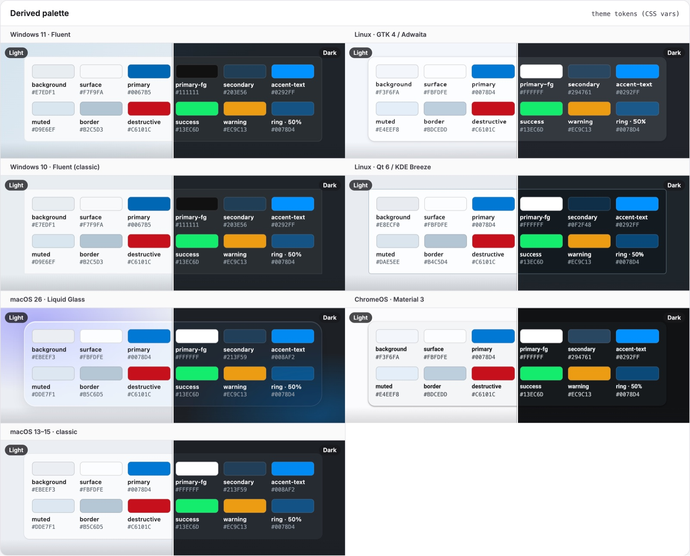
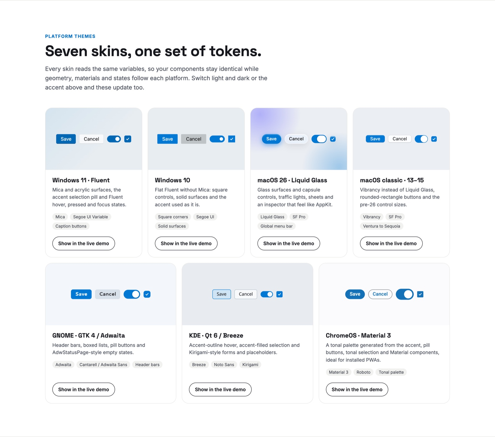

The theme.
Stock spartan/ui components follow the system accent, light/dark, text size, transparency and window focus, and look at home on Windows, macOS, GNOME, KDE and ChromeOS. No templates are forked.
npm install @spartan-native/themeThree files. That's it.
Start with staticHost() for a fixed skin, then swap in webHost() or a desktop
adapter to read the real OS.
import { provideSpartanNative, staticHost } from '@spartan-native/theme';
export const appConfig: ApplicationConfig = {
providers: [
provideSpartanNative({
host: staticHost({ skin: 'mac' }),
persist: true, // keep the user's choice
}),
],
};// build.options.styles:
// Tailwind + spartan preset first, then the theme
"styles": [
"src/styles.css",
"src/theme.scss"
]// resolved by package name
@use '@spartan-native/theme/styles/spartan-native';The live appearance, as signals
Inject SpartanNativeTheme anywhere. Read the skin, scheme, text scale and focus as signals,
let an in-app settings screen override them, or go back to the OS values.
platformFamily() is the real OS, whatever skin the user picked: use it for key
bindings and native window buttons. A Mac dressed as Windows still gets ⌘.
No Angular? applySpartanNative(element, appearance) does the same on any element, and the
static palettes make it work as plain CSS:
<html class="t-gtk dark" data-sn-skin="gtk">.
const theme = inject(SpartanNativeTheme);
theme.skin(); // 'win' | 'mac' | 'gtk' | …
theme.scheme(); // 'light' | 'dark'
theme.platformFamily(); // 'macos' on a Mac dressed as Windows
theme.override({ scheme: 'dark' }); // from an in-app setting
theme.followSystem(); // back to the OS valuesTokens in, skins on top.
derivePalette()
Turns one accent color into every color token (--sn-color-*), with per-platform neutrals
and WCAG contrast checks.
applySpartanNative()
Writes the tokens inline on the root, plus the classes t-<skin>, dark,
rt, inactive, hc and reduce-motion.
The SCSS
Maps the tokens onto spartan's variable names so stock components pick up the colors, then each skin restyles shape, materials and states.
One cascade layer, no !important
All CSS lives in the spartan-native layer, ordered after Tailwind's
utilities. Skins beat spartan's utility classes without !important, and your own
unlayered CSS still beats the skins. _hooks.scss is the only file that knows spartan's
markup, so an upstream change is a one-file fix.
Pick an accent. Watch the palette follow.
A simplified preview of what derivePalette() does: the accent is mixed with each platform's
real neutrals. The real function also adjusts text until it reaches 4.5:1, and builds a Material 3 tonal
palette for ChromeOS.

Seven skins, one set of tokens.
A skin is a class on the document root. The ids are short because they are CSS classes and are stored with the user's overrides, so they never change.
win
Windows 11 · Fluent
Mica and acrylic surfaces, the accent selection pill, Fluent hover, press and focus states.
w10
Windows 10
Flat Fluent without Mica: square corners, 2px borders, solid surfaces. Overrides on top of win11.
mac
macOS 26 · Liquid Glass
Glass surfaces, capsule controls, traffic lights, sheets and an inspector that feel like AppKit.
macc
macOS 13–15 · classic
Vibrancy instead of Liquid Glass, rounded-rectangle buttons and the pre-26 control sizes.
gtk
GNOME · GTK 4 / Adwaita
Header bars, boxed lists, bold buttons and AdwStatusPage-style empty states.
qt
KDE Plasma · Breeze
Accent-outline hover, accent-filled selection and Kirigami-style forms and placeholders.
cros
ChromeOS · Material 3
A tonal palette generated from the accent, pill buttons and tonal selection. Ideal for PWAs.
web
Unknown OS
Token defaults only, with no style sheet of its own yet. Stock spartan shapes, derived colors.

Every pixel, per platform.
At 100 % text size. Sizes are in rem, so they all grow with the OS text size.
| Control | win (11) | w10 | mac (26) | gtk | qt | cros |
|---|---|---|---|---|---|---|
| Base font size | 14 | 14 | 13 | 14 | 13 | 14 |
| Button height / radius | 32 / 4 | 32 / 2 (2px border) | 30 / pill | 34 / 6, bold | 32 / 5 | 36 / pill, outlined |
| Input height / radius | 32 / 4, accent bottom stroke | 32 / 0, 2px border | 28 / 8 | 34 / 6, filled | 32 / 5 | 40 / 4, outlined |
| Checkbox | 20, r4 | 20, r0, 2px | 16, r5 | 20, r6 | 18, r3 | 18, r2, 2px |
| Switch track / knob | 40×20 / 12 | 44×20 / 10 | 44×24 / 26×20 | 48×26 / 20 | 36×18 / 16 | 52×32 / 16 |
| Tab height / radius | 40 / 4 | — | 26 / pill (segmented) | 30 / 6, bold | 34 / 5 5 0 0 | 48 / underline |
| Menu radius | 8, acrylic + blur 30 | 0 | 14, glass | 12, solid | 5 | 4, padding 8 |
| Card radius | 8 + stroke | 0 | 22 | 12 + shadow | 5 + border | 12 + elevation |
| Dialog radius | 8 | 0 | 26, centered | 14, centered | 6 | 28 |
Materials and the window around them.
Materials
- Windows 11: a Mica-like backdrop, acrylic menus with a 30px blur
- macOS 26: Liquid Glass with a highlight edge; 13–15: vibrancy
- GNOME, KDE: flat backgrounds, solid surfaces with shadow
- ChromeOS: M3 surfaces and tonal containers
States on the root
-
.rt: every backdrop filter off; glass and acrylic become solid -
.inactive: Mica off on Windows, grey traffic lights and selection on macOS, dimmed header bar on GNOME -
.hcandforced-colors: system colors take over -
.reduce-motion: transitions and animations off
What it exports.
| Export | What it is |
|---|---|
provideSpartanNative({ host, overrides?, persist? }) |
Angular providers; reads the host (and persisted overrides) before first render |
SpartanNativeTheme |
Signals: appearance, skin, scheme, textScale,
focused, platform, platformFamily, … and
override(), followSystem(), capability()
|
injectSkin(), injectPlatformFamily(), injectNativeSkin()
|
The look, and the real OS (behavior), as signals |
SKIN_LABELS, SKIN_OPTIONS, TEXT_SCALE_OPTIONS, … |
Display names for an appearance settings screen |
applySpartanNative(el, appearance) |
Framework-free: classes and variables on any element |
derivePalette({ skin, accent, scheme, reduceTransparency }) |
The color algorithm |
paletteToCssVars(palette) |
The --sn-color-* map |
resolveSkin(platformInfo), skinClasses(skin) |
The OS → skin table |
staticHost(initial?) |
A code-controlled NativeHost for demos, tests and Storybook |
NativeHost, AppearanceState, PlatformInfo, … |
The host contract every adapter implements (see Hosts) |
Every skin, one toolbar.
The @spartan-native/theme/storybook entry point publishes the same toolbar the project uses:
an OS select, reduce transparency, contrast, inactive window, text size 100–200 % and an accent picker.
- All the skinned spartan/ui components, plus a catalog of 43 more
- 364 visual regression screenshots: every skin × scheme × state, popups opened
- Each control appears only if the preview declares its global
import { spartanNativePreview } from '@spartan-native/theme/storybook';
export default {
...spartanNativePreview({ textSize: true, windowFocus: true }),
} satisfies Preview;import '@spartan-native/theme/storybook/manager';